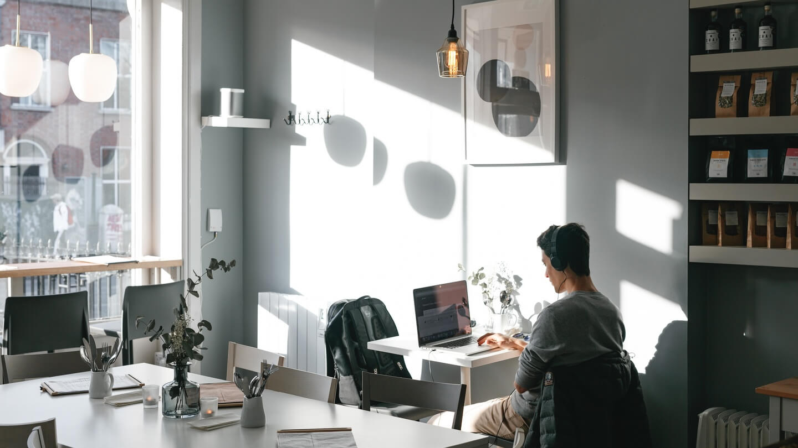

Our Story
The idea for The Little Chico was born on a quiet evening between long shifts and lingering conversations about food, culture, and identity. It started with a simple question: what if a restaurant could feel like a small escape—somewhere warm, honest, and full of personality? The name itself came first, inspired by a playful nickname that carried both familiarity and charm. From there, everything began to take shape.
The founders didn't want just another place to eat; they wanted to create a space where people could slow down. Influenced by travels, family recipes, and late-night meals shared with friends, the concept became a blend of comfort and curiosity. The menu was imagined as something approachable but with small surprises—dishes that felt nostalgic yet slightly reinvented.
There were doubts along the way. Finding the right location, refining the concept, and balancing creativity with practicality wasn't easy. But each obstacle helped define what The Little Chico would become: simple, intentional, and welcoming. The design followed the same philosophy—nothing excessive, just a cozy atmosphere where every detail had a purpose.
At its core, The Little Chico is about connection. Between people, between cultures, and between past and present. What began as an idea on a quiet evening slowly turned into a place where stories are shared daily—over food, laughter, and the comfort of feeling at home somewhere new.


Menus
Weekday Menu
Weekend Menu
Allergens: Gluten (G), Crustaceans (Cr), Eggs (E), Fish (F), Peanuts (P), Soybeans (S), Milk (M), Nuts (N), Celery (C), Mustard (Mu), Sesame (Se), Sulphites (Su), Lupin (L), Molluscs (Mo)